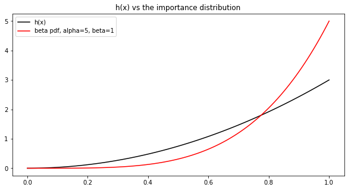
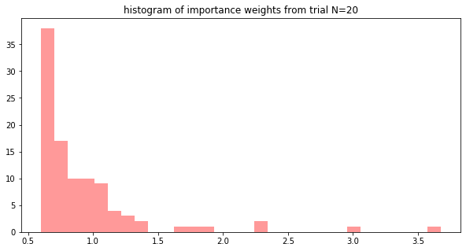
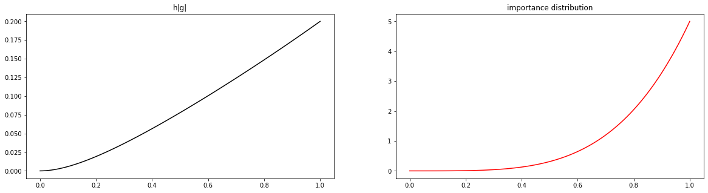

Lab 3: Sampling and Monte Carlo Integration#
This lab is adapted from AM207 (Harvard). Data files are in the book’s data/ folder. Worked solutions are collapsed: try each exercise before expanding them.
In this lab
Monte Carlo Estimation of a Gener Integral
Practice: Implementing Monte Carlo Integration
Arbitrary Definite Integrals#
We formulated Monte Carlo estimation as a way to approximate the expected value of functions of random variables. However, given a function of deterministic variables, \(f(x)\), we can rewrite the integral
where \(x\in\mathbb{R}^D\) and \(\Omega \subseteq \mathbb{R}^D\), like an expectation
if we can factor \(f\) as \(f(x) = g(x)h(x)\).
The rewritten integral looks a lot like the expectation of \(g(X)\) where the pdf of \(X\) is \(h(X)\). The only problem is that \(h(x)\) is not necessarily a pdf!
Rewriting an Arbitrary Definite Integral as an Expectation#
We want to rewrite the following expression as an expectation:
Then we can write:
We recognize the above integral as an expectation, and hence can estimated using Monte Carlo methods:
How Do You Factor the Integrand \(f\)?#
Once we factor \(f(x)\) as \(f(x) = g(x)h(x)\), then we can rewrite the integral of \(f\) (over \(\Omega\)) as an expectation
But how does one choose \(g\) and \(h\)? Two simple things to keep in mind:
since we need to sample from \(h\), we need to choose \(h\) such that it is easily approximated by distributions from which we know how to sample.
since the variance of the Monte Carlo estimator depends on \(g\), we should choose \(g\) to be relatively flat (so that the output of \(g\) has low variance).
Exercise: Monte Carlo Integration#
Use Monte Carlo methods to estimate the following integral:
Hint: write the integrand \(f\) as \(f(x) = g(x)h(x)\) where \(h(x)\) defines a pdf over \([0, 1]\) and is easy to sample from.
Solution
The integrand \(f(x) = \frac{3x^2}{x^3 - x^2 - 11x -4}\) naturally decomposes as
Out of the two factors, it looks like \(3x^2\) is easier to integrate (and differentiate) so it’s a good candidate for a pdf. Thus, we set
Before writing a sampler for \(h(x)\), we need to check that it defines a pdf on \([0, 1]\)! To this end, we compute:
So we see that \(h(x)\), when restricted to \([0, 1]\) defines a pdf!
But how do we sample from \(h(x)\) (after all, \(h(x)\) doesn’t look like the pdf of a well-known distribution)? Since the CDF \(H(a) = \int_{0}^a h(x) dx = a^3\) is an invertible function, \(h\) is a natural candidate for inverse CDF sampling. The inverse of the CDF of \(h\) is
Now, we write rewrite the integral we want to compute as an expectation
The naive Monte Carlo estimator for \(I\) is
We implement this estimator below:
mean of 500 number of monte carlo estimates: -0.0840213302768032
variance of 500 number of monte carlo estimates: 3.4118616765217585e-06
Solution
The sample variance of the naive Monte Carlo is already small, but we can still consider some variance reduction techniques. In particular, we can consider importance sampling.
Importance Sampling
If we want to compute the importance sampling estimate we need an importance distribution for \(h\). Since \(h\) is a distribution on \([0, 1]\), it’s natural to consider the beta distribution as an importance distribution.

Solution
Implementing the importance sampling estimate is straight-forward:
We just need to sample from the Beta, compute the importance weights \(\frac{h(X_s)}{q(X_s)}\) and compute \(g(X_s)\).
mean of 500 number of importance sampling monte carlo estimates: -0.08496357680015376
variance of 500 number of importance sampling monte carlo estimates: 0.00018620123953831943
Solution
The variance of importance sampling Monte Carlo is higher than that of the naive Monte Carlo! Weren’t we promised that importance sampling was a variance reduction method? Looking at the “Nitty Gritty” slides page on importance sampling, we realize that an important criteria was that:
the importance distribution \(q\) look like the nominal distribution \(h\), otherwise the importance weights become heterogenous (polarized)
the importance distribution is roughly proportional to \(h|g|\).
Let’s plot both the weights from one of the trials and \(h|g|\) to diagnose the problem.

Solution
We see that the majority of the weights are below 1.0, so these samples have a “small effect” on the overall estimate. We might conjecture that maybe this is why the variance of \(\widehat{I}_{\text{IS}}\) is higher (try confirming this conjecture by computing the effective sample size!).

Solution
From this visualization we see that our importance distribution doesn’t look very much like the product \(h|g|\). Maybe this is the source of the higher variance of our importance sampling Monte Carlo estimate.
To test our hypothesis, you can try to pick an importance distribution that looks more proportional to \(h|g|\) and see if using that distribution will decrease the variance of \(\widehat{I}_{\text{IS}}\).